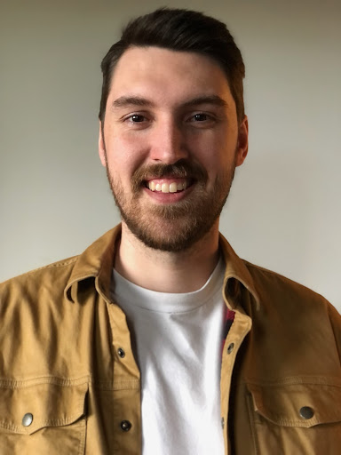
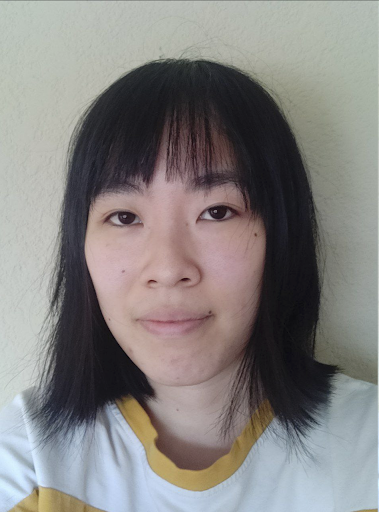
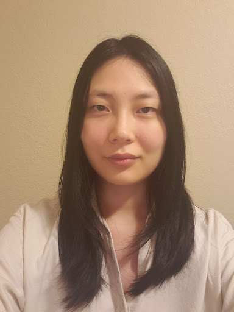

Cuboh is a company based in Victoria that offers restaurants a way to aggregate their delivery apps and manage menus, schedule pickups and handle transactions all on one device.
Our project, A Superb Menu Rater (ASMR), aims to improve the functionality of Cuboh’s existing web application, which allows potential clients to input links to their menus, creates graded reports on the menus, sends the reports to the user via email, and generates leads for Cuboh.

Hudson has always had an interest in complex problem solving and a curiosity for computer sciences. This has led to him developing a high level of persistence and patience to give him a strong basis to apply to practical skills. Hudson has a solid foundation of knowledge in the computer science field but is still eager to learn and take on new challenges. The ICS program has given Hudson the opportunity to work in a collaborative environment where he has learned to develop his skill in helping and communicating with his peers.

Erin has grown up surrounded by technology. Feeling the drive to do something more with that interest, she joined the ICS program in pursuit of further knowledge and to gain practical skills. With the combination of her proactive communication, organisational skills, and her unending love for new technologies, Erin is ready to tackle any challenge head-on.

Gabi is interested in another chance to apply her new technical and administrative skills to project design and development. At Camosun, she's enjoyed working on projects related to web and mobile development, game development, and database design and management, and she's ready to work with her peers to create and implement creative, practical solutions.
Team EGH would like to thank their sponsors at Cuboh: Sam Kandola, Tate Mowbray, and Manny Pasquale, and Camosun faculty members including the Computer Science Department Chair Saryta Schaerer, our faculty advisor Brandon Devnich, and our instructors Jonas Bambi and Katie Tanigawa for their feedback and support throughout the project.